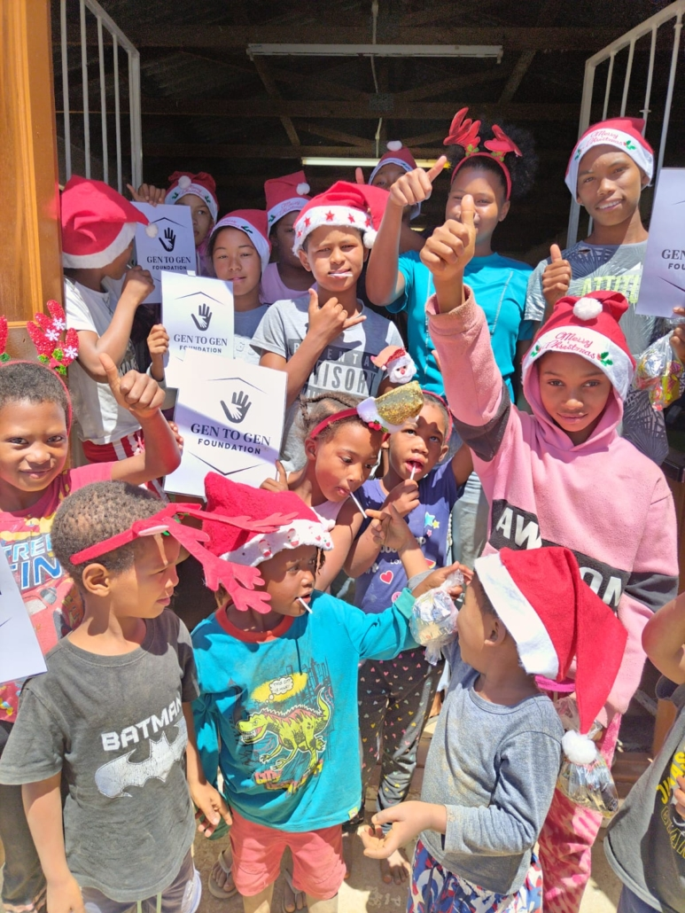
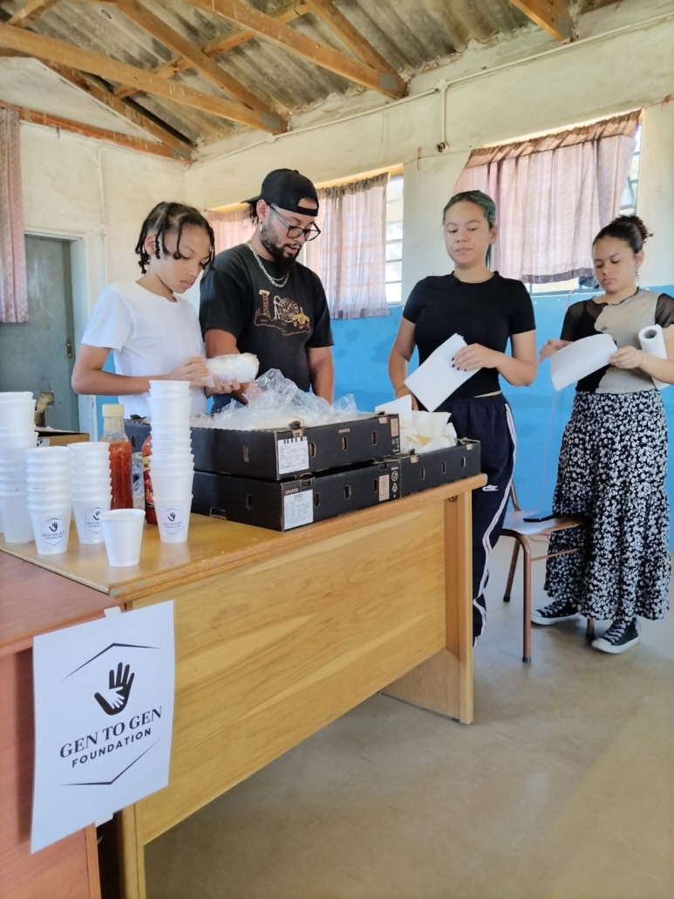
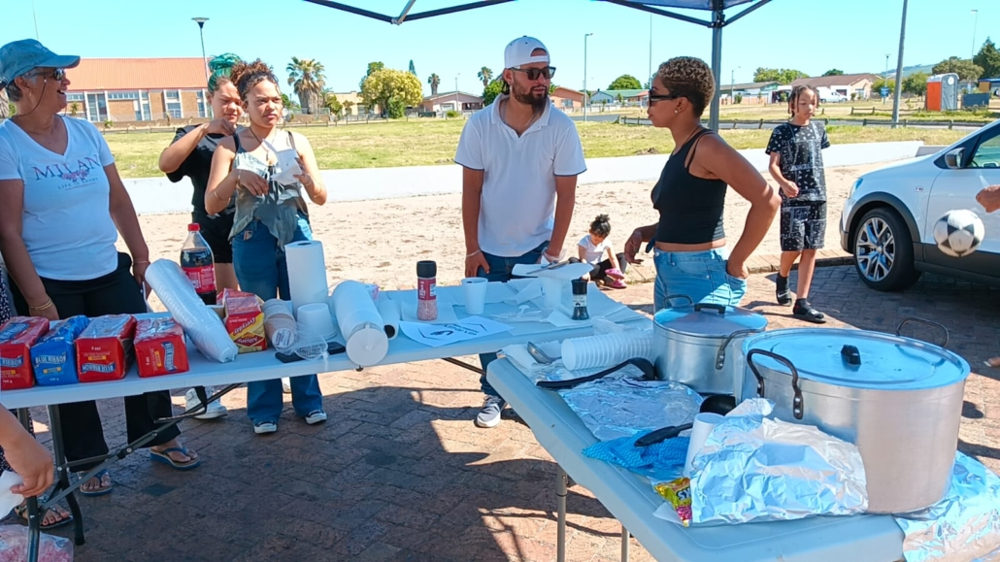

Philanthropy
Philanthropy allows individuals and organisations
to come together to support communities facing
challenges such as poverty, healthcare needs,
education and nutrition.
Support and donations can help the foundation
continue assisting people and communities that
need help.
Youth Empowerment

Youth empowerment focuses on providing young
people with support, opportunities and resources
that can help them develop confidence and
resilience.
The foundation aims to help young people develop
skills and make positive contributions to their
communities.
Mentorship

Mentorship gives young people an opportunity to
receive guidance and support from people with
experience in different areas.
Mentorship can provide guidance in areas such as
education, sport, career development and health.
Soup Kitchens

Gen to Gen Foundation's soup-kitchen initiatives
aim to provide nutritional meals to people in
need in identified communities.
The organisation identifies communities in
Johannesburg and Cape Town for its soup-kitchen
activities.
Community Support
Community support is an important part of the
foundation's work. Different initiatives can
assist vulnerable people and help communities
respond to their needs.
Individuals and organisations can contribute by
volunteering, providing support or making a
donation.
Donations
Donations help support the foundation's programmes
and community initiatives.
If you would like to find out how you can support
Gen to Gen Foundation, please use our enquiry page.
Make an Enquiry